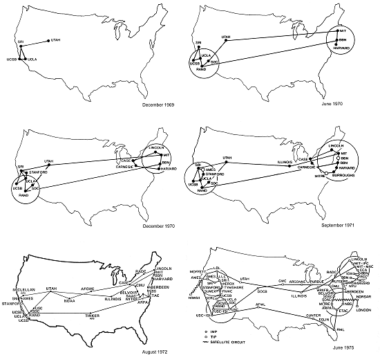

Leçon 1 – Internet : une innovation sociotechnique#
Une brève chronologie du numérique#
Exercices :
Parcourir la timeline
Répondre aux question sur Wooclap en cliquant ici ou en flashant le QR code ci-dessous

La commutation par paquet et le protocole TCP/IP#
Internet est le nom donné au protocole permettant à des ordinateurs de communiquer à distance, c’est-à -dire de s’échanger des informations. Ce protocole est le TCP/IP, qui signifie “Transmission Control Protocol/Internet Protocol”. Il a été mis au point en 1973 par Vinton Cerf et Robert Kahn dans le cadre du projet ARPANET initié en 1966 sous l’égide de l’Information Processing Techniques Office (IPTO). L’IPTO est lui-même une subdivision de l’Advanced Research Projetcs Agency. L’ARPA est une agence mise en place en 1958 par le Département américain de la Défense en réponse à l’envoi du premier satellite Spoutnik par l’Union soviétique.
La première démonstration d’une communication en réseau entre deux ordinateurs a eu lieu le 9 décembre 1968 avec en vedette Doug Engelbart. Alors qu’Engelbert et son équipe étaient dans le San Francisco’s Civic Auditorium, ils ont réussi à interagir avec un autre ordinateur situé dans leur laboratoire de l’université de Stanford. C’est aussi la première fois qu’on a utilisé une souris. Efin, cette démonstration est considérée comme “the mother of all demos”.
Un an après la démonstration, ARPANET permit de connecter les ordinateurs de la UCLA’s School of Engineering (Los Angeles) à ceux de la (Menlo Park), de l’UC Santa Barbara et de l’université de l’Utah. En 1971, 23 organisations réparties sur les côtes est et ouest des USA étaient connectées à l’ARPANET, et en 1973 Londres rejoignait le réseau.


Au départ, l’ARPANET fonctionne grâce au protocole NPC (Network Protocol Program). Ce protocole pose toutefois 2 problèmes:
La communication passe uniquement par les câbles téléphoniques, ce qui réduit son application militaire puisqu’il ne permet pas d’échanger des informations par radio ou satellite [Abbate, 1999].
Il faut appartenir au même réseau. Ce qui rend plus difficile son usage académique par exemple.
Deux problèmes que le protocole TCP/IP (donc Internet) va permettre de résoudre. Dans les deux cas, les protocoles NCP (Arpanet) et TCP/IP (Internet) mettent en application le concept “switching packet†(communication par paquet) proposé par Paul Baran (Rand Company) et Donald Davies (National Physical Laboratory). Pour schématiser, on parle de “paquet”, car l’information est envoyée comme on le fait pour une lettre ou un colis : en plus du message, chaque “paquet d’information†possède une “en-tête†précisant l’adresse de l’émetteur et du destinataire. Ce sont les fameuses adresses IP.
Si l’IP peut être assimilé à une adresse, le TCP est une sorte d’accusé de réception permettant aux deux machines communiquant entre-elles de savoir si la communication est “fiable†:
à la machine émettrice de savoir que le paquet est bien arrivé
à la machine réceptrice de savoir si le paquet reçu comporte de erreurs sur certains bits
à la machine émettrice d’émettre à nouveau un paquet si besoin
Le protocole TCP permet également de subdiviser un message en plusieurs paquets et d’envoyer plusieurs messages en même temps (ou lancer plusieurs programme en même temps : lancer une vidéo et lire les mails en même temps)
L’intérêt de la commutation par paquet est qu’il n’est plus nécessaire de disposer d’un “noeud central†qui sait tout, comme cela était le cas avec les réseaux téléphoniques. Grâce aux informations contenues dans l’IP, chaque noeud (routeur) sait ce qu’il doit faire du paquet reçu : le garder pour lui, le transmettre à une autre machine de son réseau ou l’envoyer à un autre noeud (routeur). Outre l’innovation technique qu’elle représentent, la mise au point de la communication par paque a des implications économiques, politiques et sociales.
En effet, dans la mesure où le protocole TCP/IP permet de passer d’un réseau centralisé à un réseau distribué et, surtout, de connecter différents réseaux entre-eux, elle remet en question (en partie) le monopole que les compagnies des téléphones pouvaient avoir sur les réseaux de télécommunications et des bénéfices économiques qui pouvaient en résulter. Pour les mêmes raisons, il est plus difficile pour un État de contrôler les informations qui circulent dans un réseau distribué. Enfin, le “savoir†est distribué entre tous les noeuds (donc les utilisateurs) du réseau. De cette façon chaque noeud est capable d’apporter des changements aux systèmes d’information et de les diffuser au sein du réseau sans avoir à passer par un opérateur central qui pourrait bloquer l’information [Cardon, 2019].

Toutefois, il faut bien comprendre que les concepts qui sont au fondement d’Internet émergent dans des communautés déjà familiarisées à l’idée que le savoir peut et doit être partagé horizontalement. Par exemple, Steward Brand, figure de la mouvance hippie à San Francisco et proche d’Engelbart, va être à l’origine du World Earth Catalog, sorte de Wikipedia papier avant l’heure dans lequel n’importe qui peut publier ses trucs et astuces (une recette de cuisine, un mode d’emploi pour construire son ordinateur, etc.). On retrouve ainsi l’idée d’un savoir distribué et accessible de n’importe quel endroit du réseau. Une idée que les belges Paul Otlet et Henri Lafontaine avaient déjà essayé de concrétiser à travers la construction du Mundaneum, sorte de bibliothèque universelle. Paul Otlet imagine également une machine connectée, la Mondothèque, “dans l’idée de créer un réseau international des savoirs†[Cardon, 2019, p. 84].
On peut également faire l’hypothèse que la commutation par paquet, telle que conceptualisée par Paul Baran et Donald Davies et implémentée dans la norme TCP/IP, a pu s’imposer comme le “système†de communication en réseau, car elle s’est développée au sein de communautés épistémiques qui se vivaient déjà en réseau international et travaillant selon le principe du “communalisme”. Par exemple, les informaticien.nes travaillaient à partir de programmes libres développés dans le cadre d’un “scepticisme organisé†comme l’illustrent les “Request For Comment†(RFC) qui ont accompagné le développement d’Internet. Les RFC sont des documents dans lesquelles les informaticien.nes présentent et mettent en discussion les résultats de leur recherches. Le premier RFC est publié en 1969 par Steve Crocker (UCLA). Il décrit le fonctionnement du premier protocole de l’ARPA Network [Crocker, 1969]. Le RFC 1122, qui fixe définitivement le protocole TCP/IP comme la norme internet, est publié en 1983(voir https://www.rfc-editor.org/rfc/rfc1122). Aujourd’hui encore, de nouveaux RFC continuent d’être publiés. Ainsi, en 2022, la norme TCP/IP a fait l’objet d’un nouvel RFC.
Outre que le principe d’un réseau de télécommunication distribué résonne avec les pratiques des communautés épistémiques engagées dans le développement d’Internet, son “succès†tient probablement au fait qu’elle apporte une solution “peu coûteuse†aux problèmes pratiques que rencontrent les chercheurs et chercheuses à l’heure où se développent de grands équipements. En effet, avant la création de réseau d’échange de données entre ordinateur, les scientifiques devaient se déplacer physiquement. Avec Internet et la norme TCP/IP, non seulement on peut envoyer plusieurs requêtes en “même temps†à un ordinateur distant de plusieurs milliers de kilomètres, mais il n’est plus nécessaire de faire partie du même “réseau informatique”.
Enfin, Internet et les protocoles qui sont derrières constituent des innovations sociotechniques dans la mesure où elles conduisent à la création de nouvelles institutions dont le rôle va être de réguler le trafic sur les réseaux, gérer les adresses IP, organiser les modifications des protocoles :
l’IETF (Internet Engineering Task Force) : elle s’occupe des couches basses de l’infrastructure et du réseau. C’est elle qui gère aujourd’hui les RFC
l’ICANN (Internet Corporation for Assign Names and Numbers) gère les adressages IP et les noms de domaines comme les terminaisons .fr, .com, .org, etc.
la W3C (World Wide Web Consortion) traite des couches hautes du web comme la spécification du langage HTML. Elle a mis en place des procédures ouvertes et les décisions se prennent par consensus.
Le Web#
Internet, a proprement parlé, correspond à l’infrastructure réseau qui permet aux ordinateurs de communiquer entre eux. Le partage d’information nécessite d’utiliser d’autres applications comme les e-mails. Le Web en est une autre. Il repose sur le protocole http mis au point en 1989 par Tim Berners-Lee et le mathématicien belge Robert Cailliau. Il consiste à attribuer à chaque document partagé sur le réseau une URL (uniform resource locator) permettant de passer d’un document à un autre. Le Web repose sur deux autres “technologies†: le lien hypertexte et leangage html (hypertext markup langage). Le Web correspond finalement à l’ensemble des documents hypertextes auxquels on peut accéder avec un navigateur Web.